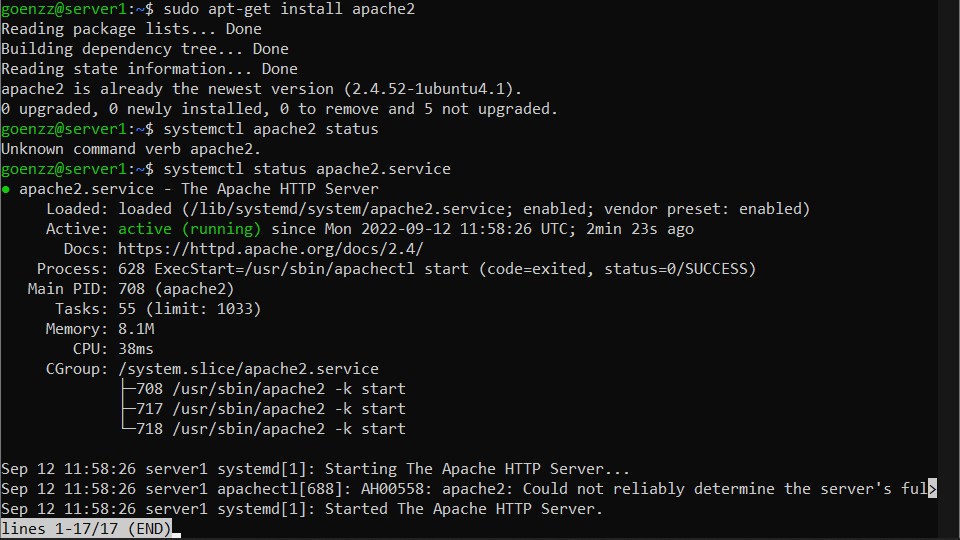
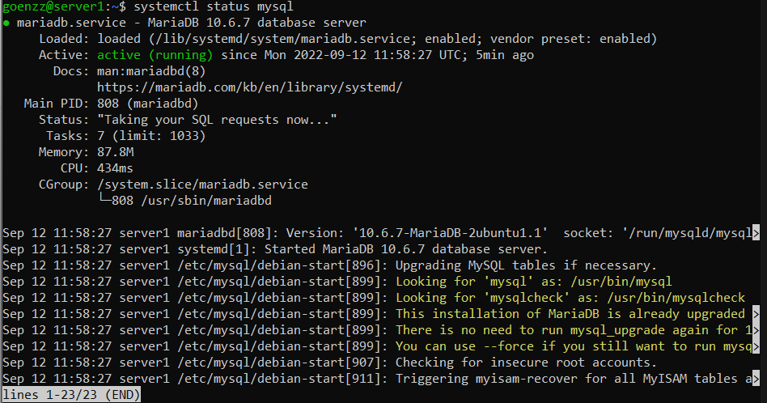
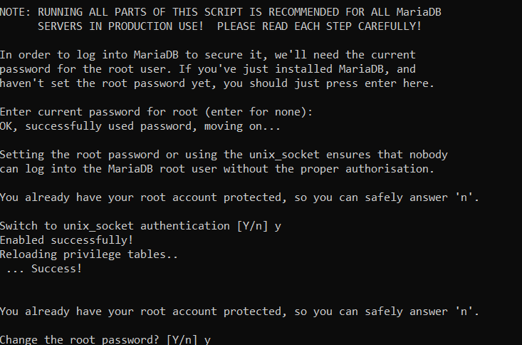
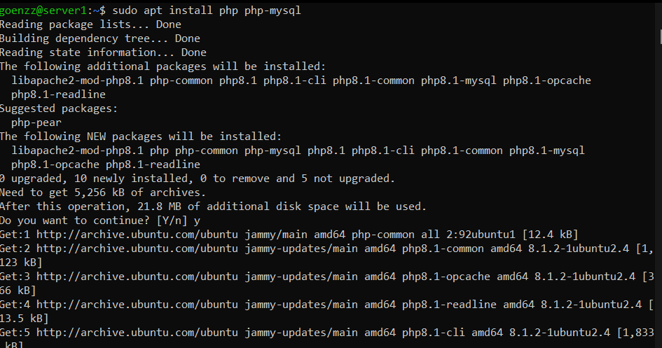
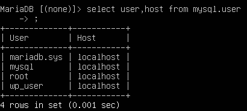
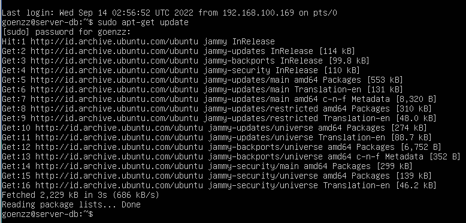
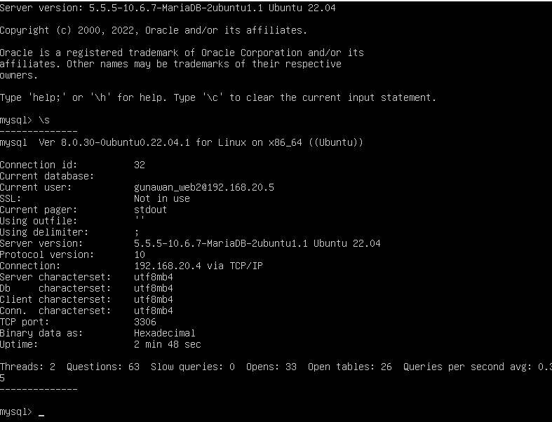
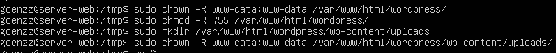

Tugas 1 Keamanan Basis Data | RKS324
Menginstall Wordpress Pada Ubuntu Server dengan Database dan Web Server Satu OS
-
Topologi implementasi OS

Dimana pada bagian ini web server dan database server digabung OS sistemnya menjadi satu kesatuan yang sama.
- Update Ubuntu Server
Agar patch yang dimiliki Ubuntu adalah yang terbaru.
apt update - Install Resource apache2 untuk Web Server Ubuntu dan cek statusnya
apache2 berfungsi sebagai pemberi layanan halaman web.
sudo apt install apache2
apache2.service - Install resource Database Server
Mariadb dan mysql sama sama merupakan software yang berfungsi untuk mengelola database. Mysql-server merupakan paket yang dimiliki dimungkinkan untuk menjalankan server MySql yang dapat menjadi host beberapa basis data dan memproses basis data tersebut. Mysql-client merupakan program yang digunakan untuk berkomunikasi pada server untuk mengelola informasi yang di kelola oleh web server.
apt install mariadb-server mariadb-client
atau mysql-server mysql-client - Mengaktifkan mysql secure installation
menggunakan perintah :mysql_secure_installation - Menginstall PHP8
Menginstall PHP8 agar nanti wordpress bisa dipakai,Php merupakan bahasa pemrograman yang berjalan pada server-side scripting, dimana fungsinya bisa menjadi pengembangan website agar lebih dinamis dan bisa menyesuaikan dengan berbagai kondisi. Php-mysql sebuah paket atau sofware menyediaakan modul mysql untuk Php.
apt install php php-mysql - Menginstall Wordpress
- a.Buat database Wordpress di Mysql

- b.Membuat database user untuk Wordpres
CREATE USER 'nama_user'@'localhost' IDENTIFIED BY 'password';- c.Memberikan Privileges User
GRANT ALL ON nama_db.* TO 'nama_user'@'localhost';
FLUSH PRIVILEGES;- d. Menginstall Wordpres
cd /tmp && wget https:?wordpress.org/latest.tar.gz
- i. mengunduh file wordpress di folder tmp, diekstrak dan di copy ke folder /var/www
sudo tar -xvf latest.tar.gz
cp -R wordpress /var/www/html/- ii. Mengubah ownership folder Wordpress
chown -R www-data:www-data /var/www/html/wordpress/- iii. Mengubah File Permission dari folder Wordpress
chmod -R 755 /var/www/html/wordpress- iv. Membuat direktori uploads didalam direktori wp-content dan mengganti ownershipnya
mkdir /var/www/html/wordpress/wp-content/uploads
chown -R www-data:www-data /var/www/html/wordpress/wp-content/uploads- e. Wordpress sudah terinstal
dengan mengetikkan :
http://ip-server/wordpress
Pada tutorial ini menggunakan 1 OS Ubuntu server yang dipakai sekaligus sebagai Web Server dan Database Server. Dengan paket yang diperlukan pada OS adalah apache2, php, php-mysql, mysql-server, mysql-client, dan source wordpress untuk di install. Berikut langkah langkahnya :
Menginstall Wordpress Pada Ubuntu Server dengan Database dan Web Server Berbeda OS
-
Topologi implementasi OS

Pada gambar diatas menggambarkan bahwa kita akan membuat sebuah sistem dimana satu Database Server akan menyimpan data data dari Web Server 1 hingga Web Server 3.
-
Update OS Ubuntu Server
sudo apt Update
sudo apt upgrade -
Install resource untuk database seperti
apt instal mariadb-serveratauapt install mysql-server
- Mengatur keamanan pada mysql
- Mengatur bind-address menjadi IP Database Server
-
Membuat User baru dengan menggunakan Host dari IP Web Server

-
Membuat database yang akan digunakan untuk menyimpan data dari Wordpress

Mengatur Database Server
- Menginstall Source yang diperlukan
apt install apache2 apt install mysql-client apt install php php-mysql
- Mengecek koneksi Web Server dengan Database
mysql -u 'user' -h 'IP Database' -p
lalu ketik :mysql > \s - Install Wordpress dengan perintah berikut.
cd /tmp && wget https://wordpress.org/latest.tar.gz
- Ektrak file tersebut
tar -xvf latest.tar.gz - Copy file wordpress ke folder /var/www/html
cp -R 755 /var/www/html - Mengganti ownership dan file permission
chown -R www-data:www-data /var/www/html/wordpress/
chmod -R 755 /var/www/html/wordpress - Membuat direktori uploads didalam direktori wp-content dan mengganti ownershipnya
mkdir /var/www/html/wordpress/wp-content/uploads
chown -R www-data:www-data /var/www/html/wordpress/wp-content/uploads - Terus ulangi langkahnya agar bisa dipakai pada OS lain, dan Web Wordpress sudah terinstall

Mengatur Web Server dan Menginstall Wordpress
- UNION
Digunakan untuk menggabungkan dua tabel atau lebih.

- SELECT
Digunakan untuk menampilkan data dari table database

- WAIT
Digunakan untuk membuat agar data keluar dalam jangka waktu tertentu
- --
Digunakan untuk memberikan komentar pada perintah
Penjelasan kegunaan antara union, select, wait dan --